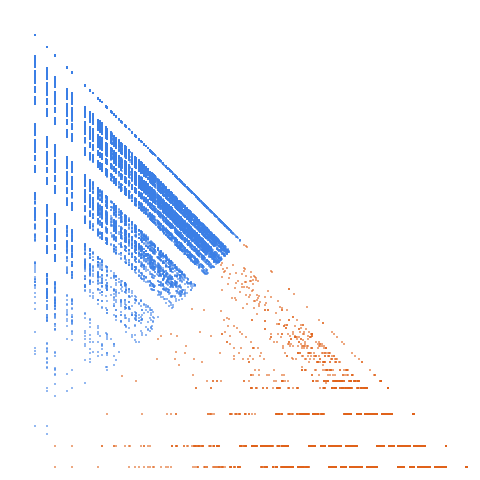

Numbers containing no prime digits

Open in the 3-D viewerA084984 on the OEIS
| Terms | 100,000 (n = 1 … 100,000) |
|---|---|
| Decomposable (a > 2d) | 99,991 |
| Level class, k > L | 15,179 · 15.18 % |
| Weight class, k ≤ L | 84,812 · 84.82 % |
| Ties, k = L | 15 |
| On the level line L = 1 | 6,248 |
| Forced level, l ≤ d² | 217 |
| Range of a(n) | 0 … 4,090,986 |
| Range of the jump d | 1 … 2,000,001 |
| Largest weight k, level L | 4,090,967, 2,045,454 |
14 different gaps occur, from 1 to 2,000,001; the level share is 15.18 %; L = 2 holds 49 % of the level class; 9 terms do not decompose.
The decomposition
Every term of a strictly increasing sequence is written a(n) = k(n)·L(n) + d(n): the jump d = a(n+1) − a(n), the weight k the least divisor of a − d greater than d, the level L = (a − d)/k. A term decomposes when a > 2d; it is in the level class when k > L and in the weight class when k ≤ L. See decompwlj.com and arXiv:0711.0865.